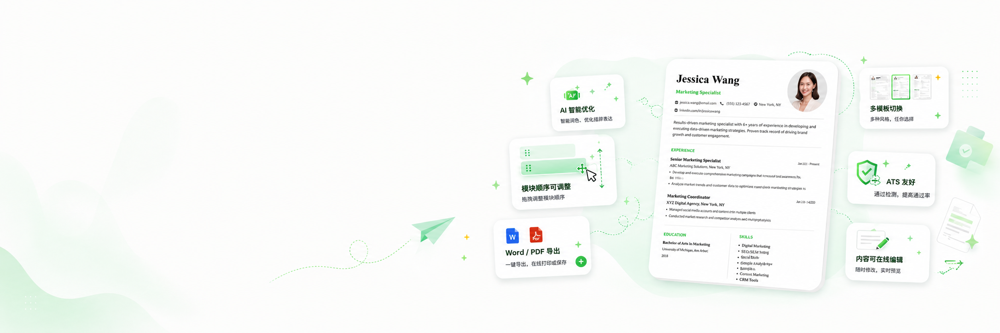
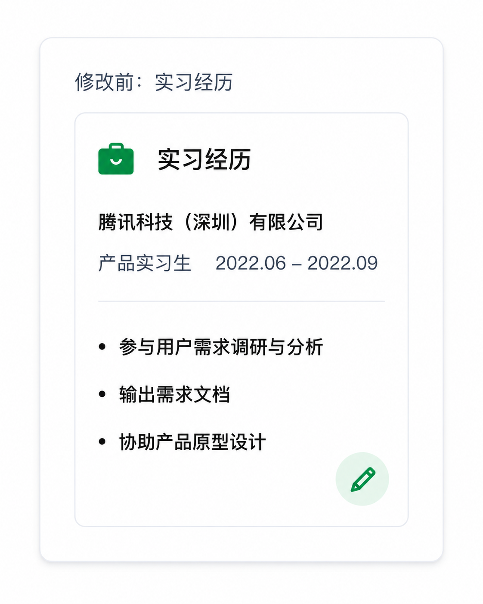
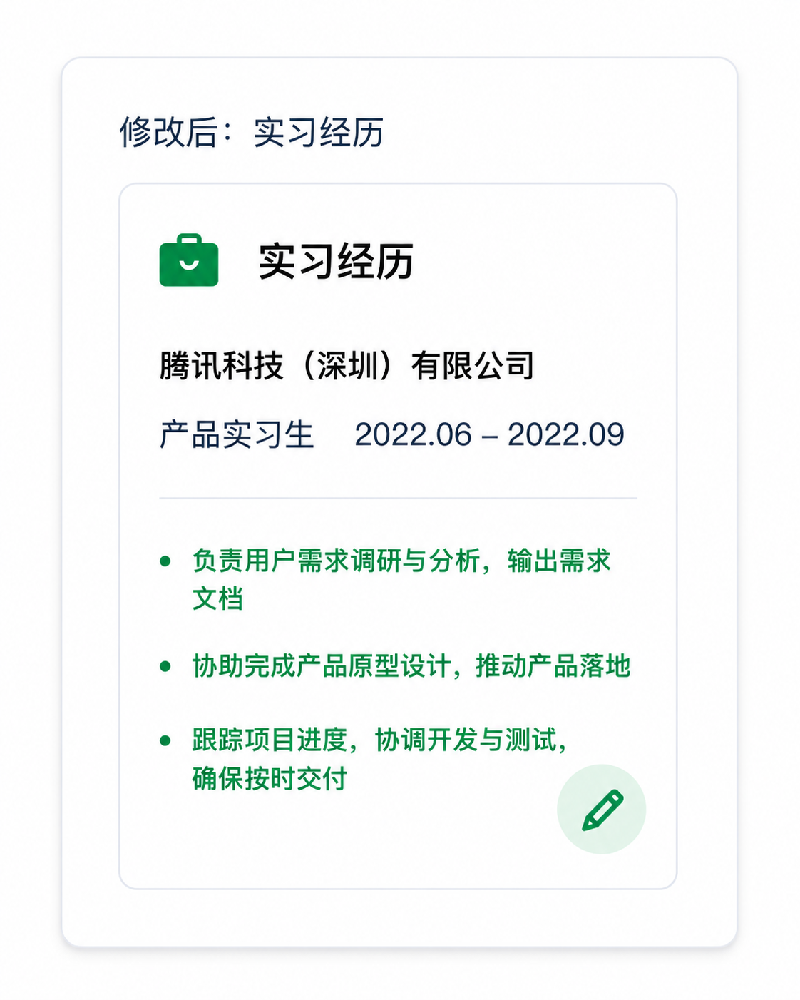
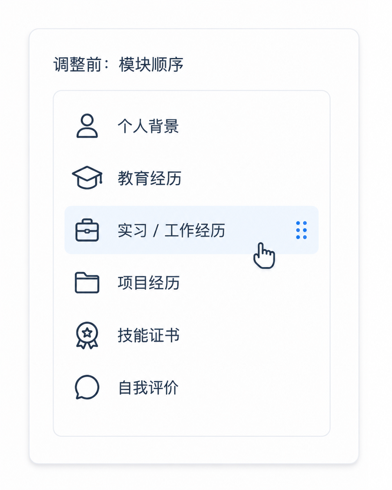
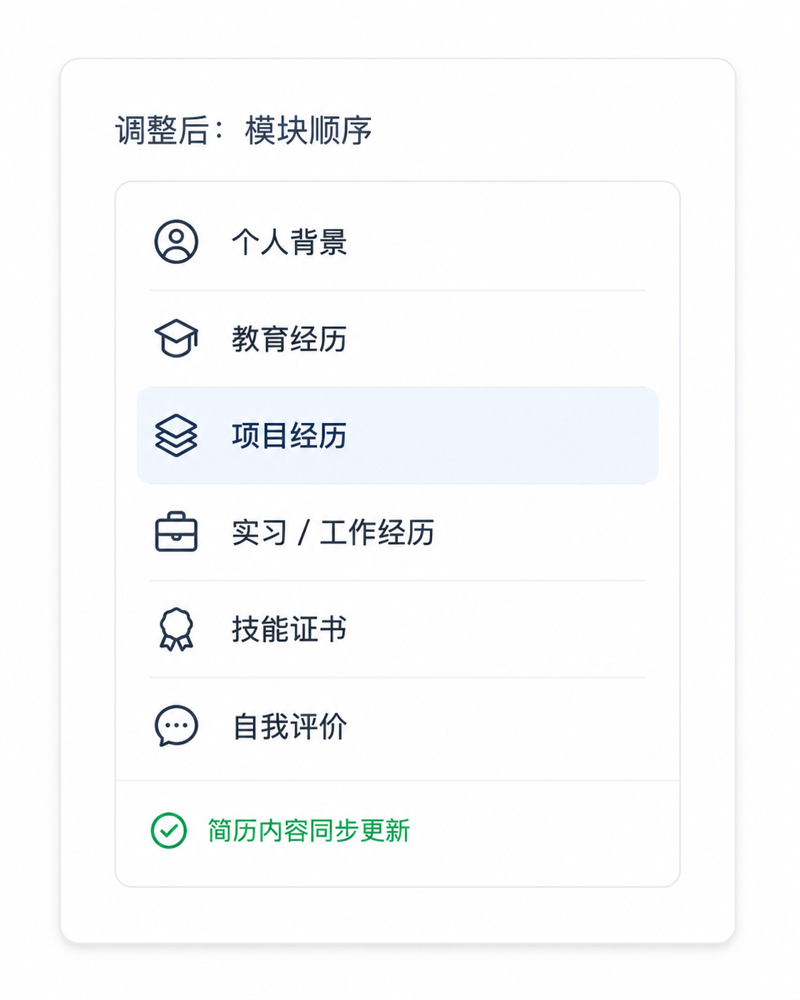
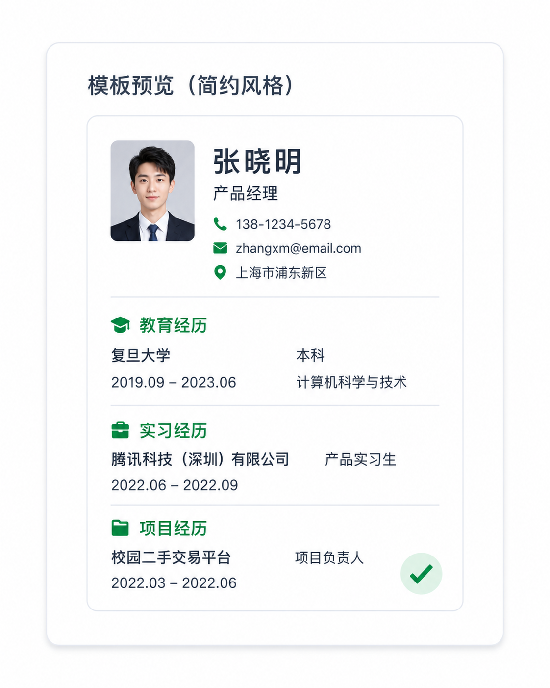

✦
AI 生成可多次尝试
带有 ✧ AI 生成 按钮的输入框可多次生成，可对比后选择最优版本。

带有 ✧ AI 生成 按钮的输入框可多次生成，可对比后选择最优版本。
生成后可直接切换到预览与排版，但预览阶段不再支持 ✧ AI 生成。
请填写你的基本信息，包括姓名、联系方式、邮箱、当前身份、所在城市。
请填写你的教育经历，包括学校信息、学位、时间等详细信息。
请填写你的实习 / 工作经历，包括公司信息、职位、时间及具体职责。
请填写你的科研经历，包括项目信息、研究内容、贡献和成果等详细信息。
请填写你的课外活动、社团参与、志愿服务、竞赛等经历。
请填写奖学金、竞赛奖项或荣誉称号等信息。
请填写您的专业技能、编程语言、外语水平等信息。
进入预览页面后，可继续检查简历整体效果，并确认需要展示的模块。
在预览页面中，您可以勾选或取消勾选模块，决定哪些内容展示在最终简历中。
未勾选的模块将不会出现在最终简历中，简历将只展示您选择的内容。
请先确认所有展示内容无误后，再进行预览、编辑与导出操作。
你可以自由编辑内容、调整模块顺序和选择模板，打造最适合自己的简历。
预览页面中的所有内容均可编辑。

→
在右侧「布局管理」区域，拖动模块即可调整上下顺序。

→
选择不同模板，预览不同排版效果。

→最后一步，完成检查并导出简历，支持多种格式，方便投递与分享。
从基础信息、教育经历、实习项目到技能语言，按页面顺序填写，帮助你快速生成结构清晰、重点明确的英文简历。
带有 ✧ AI 生成 按钮的输入框可多次生成，对比后选择最优版本。
生成后可切换到预览与排版，继续手动调整细节。
请填写你的基本信息，包括姓名、联系方式、邮箱、当前身份、所在城市。
请填写你的教育经历，包括学校信息、学位、时间等详细信息。
请填写你的实习 / 工作经历，包括公司信息、职位、时间及具体职责。
请填写你的科研经历，包括项目信息、研究内容、贡献和成果等详细信息。
请填写你的课外活动、社团参与、志愿服务、竞赛等经历。
请填写奖学金、竞赛奖项或荣誉称号等信息。
请填写您的专业技能、编程语言、外语水平等信息。